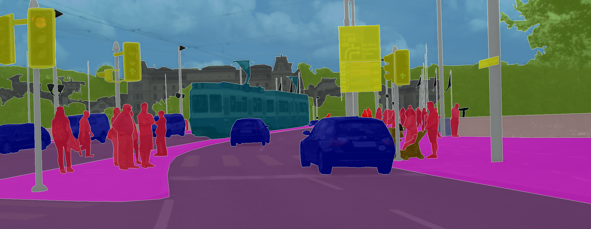

Lane Detection

The semantic segmentation datasets that are most popular for autonomous driving projects label a wide range of classes, including objects, people, signs, and roads. However, most of these datasets lack ground truth labels for lanes. Detecting lanes is an essential component of an autonomous system. To address this, we propose augmenting pre-trained semantic segmentation models with an analytical lane segmentation algorithm, which uses Canny Edge Detection and the Hough Transform. The proposed method can be used with any semantic segmentation module and any dataset.